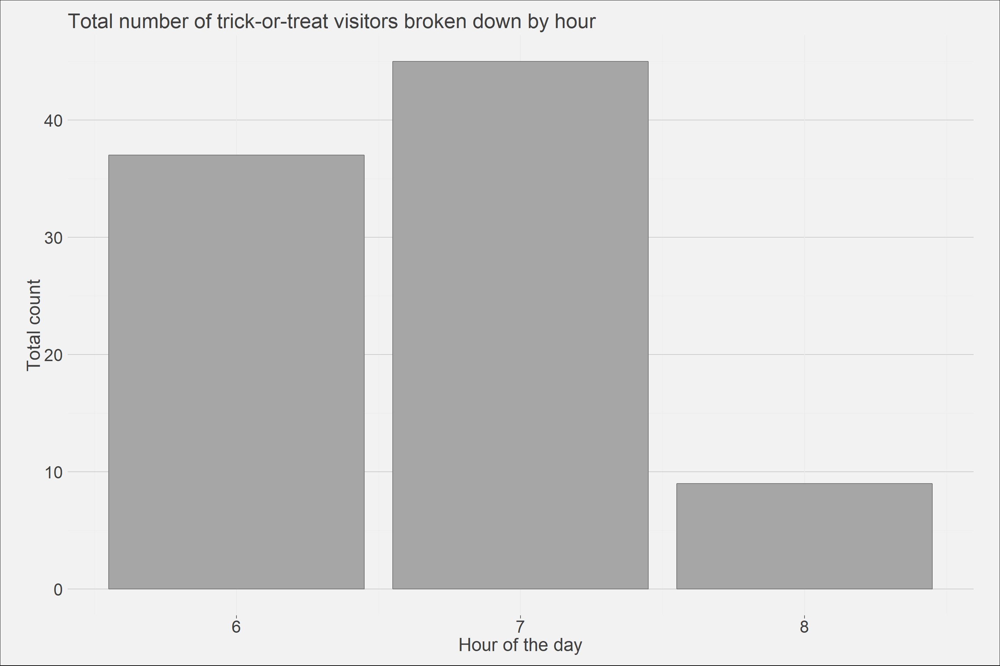
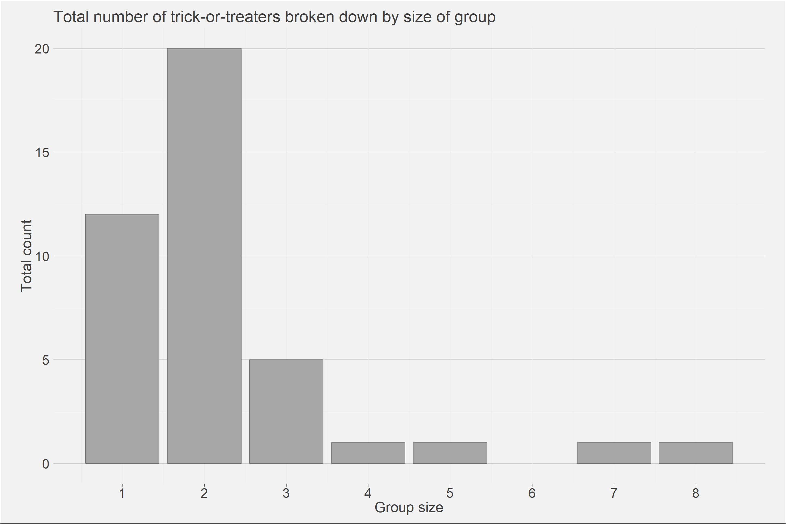

I thought I would run a fun experiment while my wife handed out candy this year and see when trick-or-treaters would start coming by our house for candy. It seems that prime candy-time starts around 6 and ends around 9. 7:00 pm is peak trick-or-treating time in my neighbourhood and I observed an increase in participant age as the night progressed.
I also thought it would be fun to record the group sizes that arrived at my front-door during this period. Group sizes of 2 were the most common, followed by 1 and then 3. I did have two large groups of 7 and 8 that came early on but nothing larger than that.
library(tidyverse);library(extrafont);library(extrafontdb);library(magrittr)None whatsoever, I simply inputted the data from my notepad into a spreadsheet and fed that into R.
# Reading in data
df <- read_csv("2018-11-04_halloween data.csv")
# Creating custom plotting theme
theme_ai <- function(){
theme_minimal() +
theme(
text = element_text(color = "gray25"),
plot.title = element_text(size=22),
plot.subtitle = element_text(size = 20),
axis.text = element_text(size=18, color = "gray25"),
axis.title = element_text(size = 20),
plot.caption = element_text(color = "gray30", size=16),
plot.background = element_rect(fill = "gray95"),
plot.margin = unit(c(5, 10, 5, 10), units = "mm"),
#axis.line = element_line(color="gray50")
axis.ticks.x = element_line(color="gray35"),
panel.grid.major.y = element_line(colour = "gray80"),
legend.position = "none")
}temp<- df %>% group_by(Hour) %>% summarise(num_tt = sum(Count))
ggplot()+
geom_bar(data = df, aes(x = Hour, y = (..count..)/(..count..)*temp$num_tt), fill='gray65', color = "gray45")+
theme_ai()+
labs(title = "Total number of trick-or-treat visitors broken down by hour",
x = "Hour of the day",
y = "Total count")+
scale_x_continuous(breaks = c(1:8))
ggplot()+
geom_bar(data = df, aes(x = Count, y = ..count..), fill='gray65', color = "gray45")+
theme_ai()+
labs(title = "Total number of trick-or-treaters broken down by size of group",
x = "Group size",
y = "Total count")+
scale_x_continuous(breaks = c(1:8))